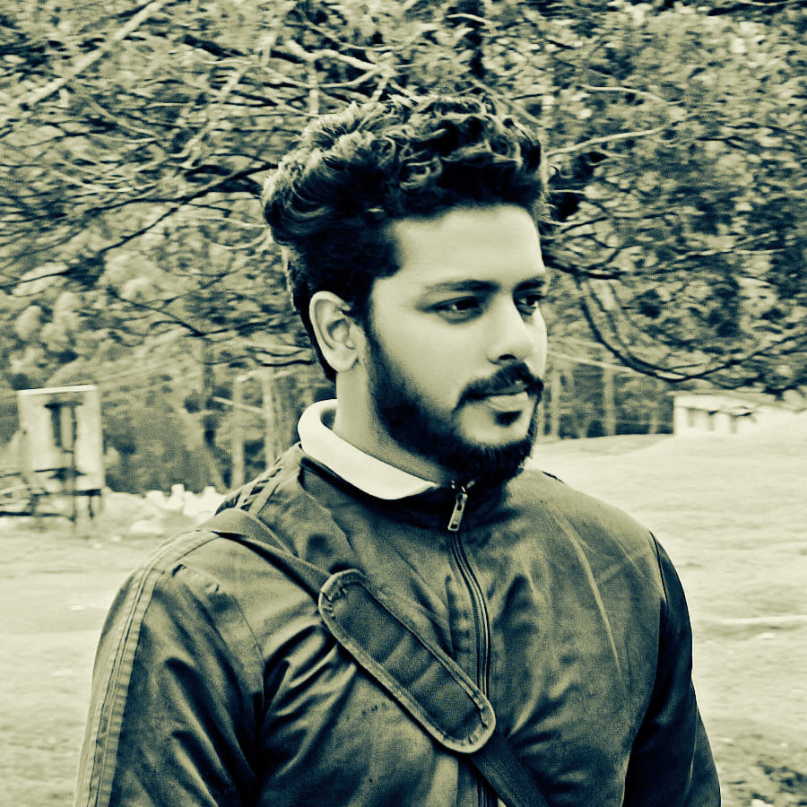

Mohammed Aslam kalluparamban
Full stack software developer at Rlabs- SAP Partner.
üì® aslucmd@gmail.com
üìû üó®Ô∏è +91 8606012370
üìû +91 8606012379
Tech stack
Java, JavaScript, HTML, CSS
Spring, Spring boot, Angular 2+, SAP UI5, CI/CD
PostgreSQL, MySQL, Oracle
Reactive, REST, Automation, Cloud Foundy
Work History
üöß SOFTWARE DEVELOPER | RLABS ENTERPRISE SERVICES LTD
DEC/2020 - Present
Working on making Operations Team's (who works on SAP ISUITE/CPI), work easiear by devoloping Tools,
and Automating the operations.
One of the tool which we devoloped ISDC(Integration Suite DevOps Cockpit) is used for proactively
Monitoirng Outages and problems, sending communication, Software update etc.
- Proactive Monitoring by orchestrating Dynatrace APIs and Other tools.
- Automating customer communication for respective system in case of outages.
- Sending manual customer communication for respective system.
- Software update orchestration, scheduling update for each system etc.
üöß INSTRUCTOR | YOUTUBE, UDEMY, TEACHABLE
11/2019 - Present
Produced content showcasing new tech, tutorials & interviews with top developers.
- 166,000+ Youtube Subscribers
- 30,000 course copies sold
- 12+ Million views on Youtube
- Made regular contributions to Traversy Medias youtube channel (1.9m Subscribers)
- Tutorial videos included projects such as social networks, Ecommerce, real time video, stripe &
paypal integrations and more
üöß SENIOR DEVELOPER | FOI LABS
10/2017 - 10/2019
Designed and developed a laboratory management system. My system
provided an interface for lab technicians and customers to view and
track data from samples tested in the lab.
- Designed prototype & pitched original idea for new lab management system (LIMS)
- Built entire code base and brought version 1 of LIMS system to market as a solo developer
- Onboarded and trained customers (Webinars & Conferences)
- Managed a small team of developers in expansion of LIMS system
üöß DIGITAL MARKETER | UNIFIVE DIGITAL
2014 - 2017
Started a digital agency building websites and marketing for
local businesses. Mostly Wordpress sites with small modifications to
themes.
- Organized SEO & SEM campaigns on a local and global scale.
- Saved a customer $110k a year by reducing Adwords CPC cost with optimization
- 70 + websites built with my small team of developers and freelancers